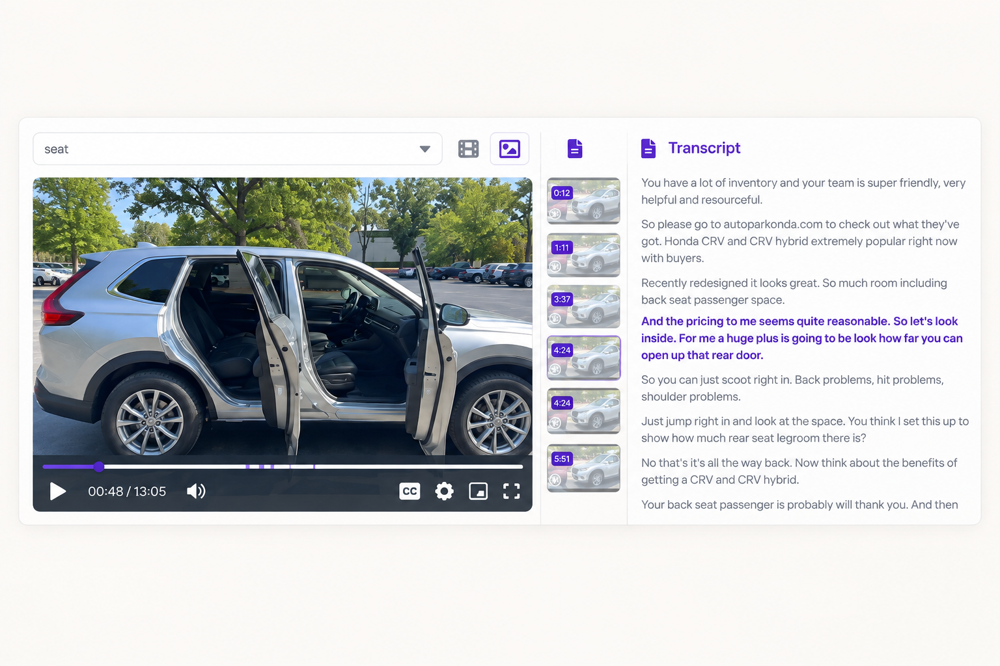
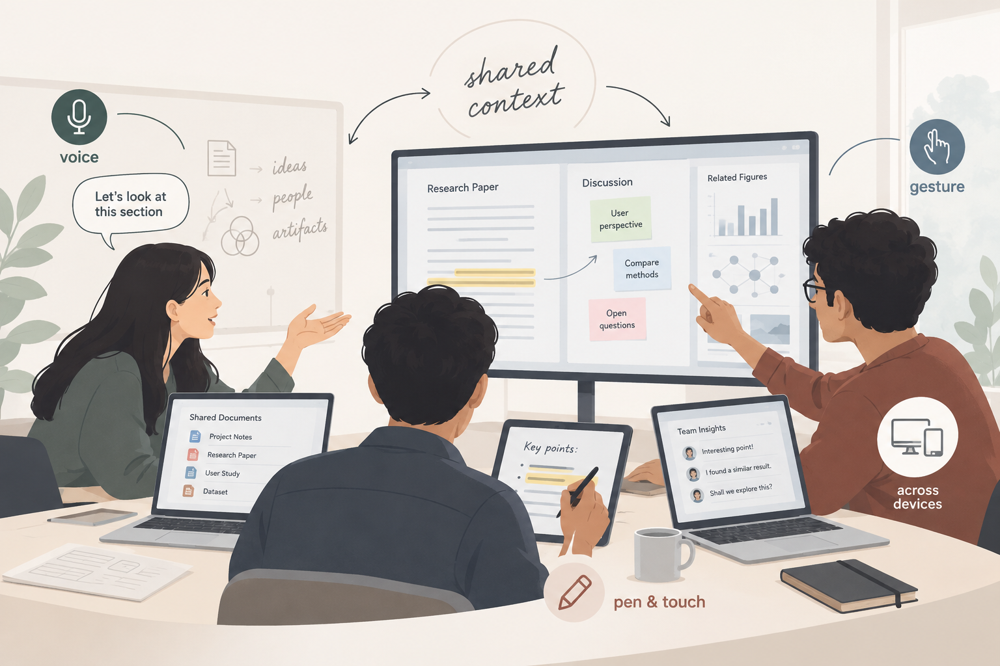
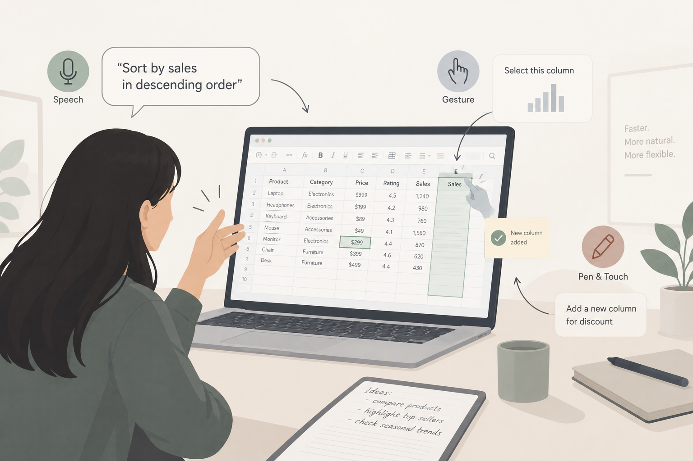

Nushrat Jahan Ria
PhD Student in Computer Science · Louisiana State University
Human–Computer Interaction | Multimodal Interaction | Collaborative Sensemaking
Nushrat Jahan Ria is a PhD student in Computer Science at Louisiana State University, where she works in Human-Computer Interaction. Her research explores how people interact with information, intelligent systems, and one another, with a particular interest in multimodal interaction and collaborative sensemaking.
Before starting her PhD, she was a Lecturer at Daffodil International University in Bangladesh. Her broader research experience spans HCI, qualitative research, machine learning and computer vision. Beyond research, she enjoys teaching, mentoring students, and contributing to the research community through reviewing and academic service.
📌 News
Accepted as SV for CSCW 2026.
Accepted as participant in the Deep Learning for Science Summer School at the University of California, Berkeley.
Judge at the 13th annual LSU Discover Day Undergraduate Research & Creativity Conference.
Received a subsistence grant for the IAIFI Summer School.
Synoptic: Query-Driven Multimodal Product Review Summarization System accepted and presented at CHI 2025 Extended Abstracts in Kyoto, Japan.
Reviewed two ACM CHI 2026 papers.
Participated in the STAQ Quantum Ideas Summer School at Duke University with travel and subsistence support.
Moderator for LSU Graduate Research Conference 2024.
Began PhD in Computer Science at Louisiana State University.
💼 Employment
Jan 2024 — Present
Graduate Research & Teaching Assistant
,
Louisiana State University
· Baton Rouge, LA
Sep 2020 — Present
Advisor
,
DIU NLP & ML Research Lab
· Dhaka, Bangladesh
Jan 2022 — Dec 2023
Lecturer
,
Daffodil International University
· Dhaka, Bangladesh
Jun 2021 — Dec 2021
Technical Program Manager
,
Apurba Technologies Inc.
· California, USA
Feb 2021 — May 2021
Research Assistant
,
Apurba-DIU R&D Lab
· Dhaka, Bangladesh
Sep 2020 — Jan 2021
Student Coordinator
,
Apurba-DIU R&D Lab
· Dhaka, Bangladesh
May 2019 — Aug 2020
Researcher
,
DIU NLP & ML Research Lab
· Dhaka, Bangladesh
📝 Selected Publications
2025
2023
MRI
Comparative Evaluation of Transfer Learning for Classification of Brain Tumor Using MRI
CV
Satellite Imageries for Detection of Bangladesh’s Rural and Urban Areas using YOLOv5 and CNN
2021
NLP
NPABT: Naming Pattern Analysis of Bengali Text to Detect Various Community Using Machine Learning Approach
2020
NLP
Toward an Enhanced Bengali Text Classification Using Saint and Common Form
🔬 Selected Projects

Multimodal Interaction for Collaborative Sensemaking
Investigating how collaborators can reference, externalize, and maintain shared context across documents, devices, and communication settings.

Multimodal Interaction for Spreadsheets
Exploring how multiple input modalities can help people perform spreadsheet tasks through more natural and direct interaction.
Synoptic
A query-driven multimodal product review summarization system that supports focused exploration of review information.
🏫 Teaching
Introduction to Database Management System · CSC 4402 · Louisiana State University
Optimization Approaches in CS: Algorithms and Applications · CSC 4512 · Louisiana State University
Introduction to Database Management System · CSC 4402 · Louisiana State University
Introduction to Database Management System · CSC 4402 · Louisiana State University
Invited Talks
Recent Research Trends and Higher Studies Opportunities · DIU Girls’ Computer Programming Club
Research for Academia & Industry · PetaAI Solutions
A to Z of International Conferences & Journals · Daffodil International University
Project “SheCodes” Finale · Special Guest · BDOSN
🏆 Recognition & Service
Awards & Recognition
IAIFI Summer School Subsistence Grant · Institute for Artificial Intelligence and Fundamental Interactions.
STAQ Quantum Ideas Summer School · Travel and subsistence support · Duke University.
Merit-Based Scholarship · Daffodil International University.
Scholarly Publication Recognition · Daffodil International University.
Deep Learning Bootcamp · DIU NLP & ML Research Lab.
Machine Learning Bootcamp · DIU NLP & ML Research Lab.
Programming Contest Recognition · Daffodil International University.
Academic Service
Reviewing: CHI 2026; Natural Language Processing Journal; Engineering Applications of Artificial Intelligence; Journal of King Saud University – Computer and Information Sciences.
Organizing: Organizing Secretary for ICNLPA 2022 and ICCGT 2021; organizer for MSIS Press and National Girls’ Programming Contest activities.
Leadership: President, DIU Girls’ Computer Programming Club (2020); Vice President, ACM Wing (2019).
Mentorship: Supervisor, Computational Intelligence Lab; Research Advisor, DIU NLP and Machine Learning Lab.
📄 Curriculum Vitae
Education, experience, publications, skills, awards, service, leadership, and invited talks.